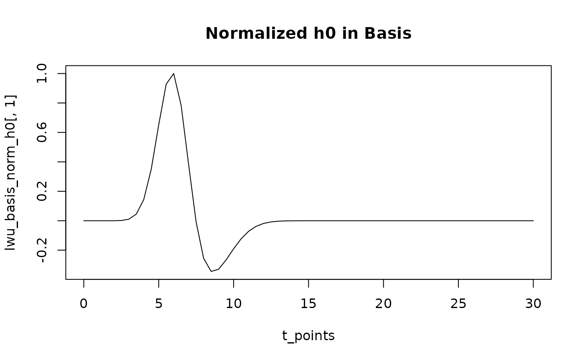
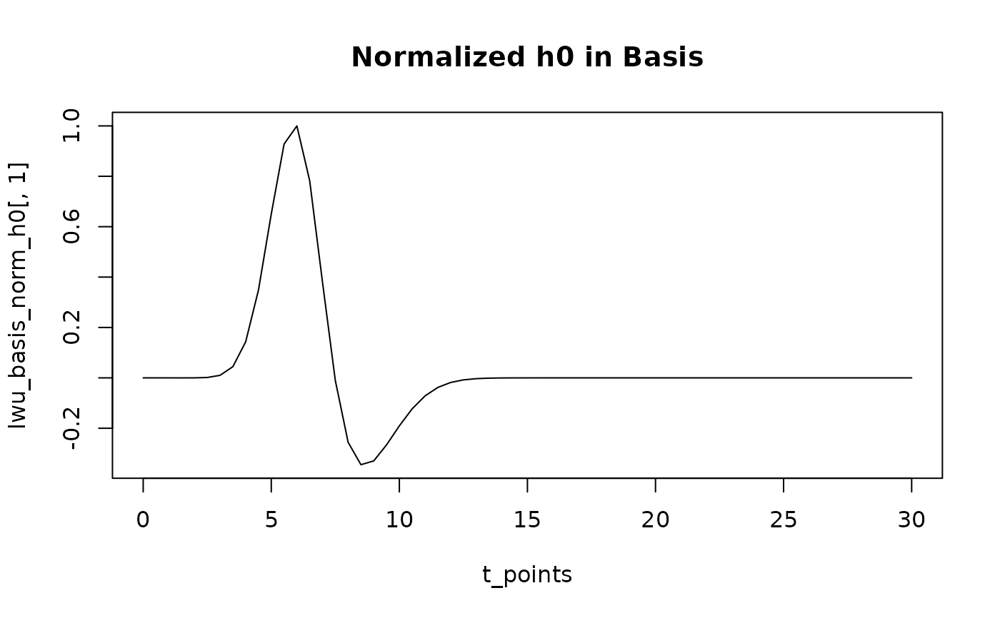

LWU HRF Basis for Taylor Expansion
hrf_basis_lwu.RdConstructs the basis set for the Lag-Width-Undershoot (LWU) HRF model,
intended for Taylor expansion-based fitting. The basis consists of the
LWU HRF evaluated at a given expansion point theta0, and its
partial derivatives with respect to its parameters (tau, sigma, rho).
Arguments
- theta0
A numeric vector of length 3 specifying the expansion point
c(tau0, sigma0, rho0)for the LWU parameters.- t
A numeric vector of time points (in seconds) at which to evaluate the basis.
- normalize_primary
Character string, one of
"none"or"height". If"height", the primary HRF column (h0(t)) is normalized to have a peak absolute value of 1. For Taylor expansion fitting as described in Fit_LRU.md, this should typically be"none"as the scaling is absorbed by the beta coefficient. Default is"none".
Value
A numeric matrix of dimension length(t) x 4. Columns are:
\itemize
\item\codeh0: LWU HRF evaluated at theta0, \eqnh(t; \tau_0, \sigma_0, \rho_0)
\item\coded_tau: Partial derivative \eqn\partial h / \partial \tau evaluated at theta0
\item\coded_sigma: Partial derivative \eqn\partial h / \partial \sigma evaluated at theta0
\item\coded_rho: Partial derivative \eqn\partial h / \partial \rho evaluated at theta0
See also
Other hrf_functions:
hrf_bspline(),
hrf_gamma(),
hrf_gaussian(),
hrf_inv_logit(),
hrf_lwu(),
hrf_mexhat(),
hrf_sine(),
hrf_spmg1(),
hrf_time()
Examples
t_points <- seq(0, 30, by = 0.5)
theta0_default <- c(tau = 6, sigma = 1, rho = 0.35)
# Generate the basis set
lwu_basis <- hrf_basis_lwu(theta0_default, t_points)
dim(lwu_basis) # Should be length(t_points) x 4
#> [1] 61 4
head(lwu_basis)
#> h0 d_tau d_sigma d_rho
#> [1,] -1.289099e-06 3.984647e-06 -2.390788e-05 -3.726653e-06
#> [2,] -5.656107e-06 1.587675e-05 -8.732212e-05 -1.693161e-05
#> [3,] -2.069270e-05 4.813840e-05 -2.406920e-04 -6.976958e-05
#> [4,] -5.119678e-05 5.142627e-05 -2.314182e-04 -2.607488e-04
#> [5,] 2.612342e-05 -6.168367e-04 2.467347e-03 -8.838263e-04
#> [6,] 1.236518e-03 -5.613114e-03 1.964590e-02 -2.717065e-03
# Plot the basis functions
matplot(t_points, lwu_basis, type = "l", lty = 1,
main = "LWU HRF Basis Functions", ylab = "Value", xlab = "Time (s)")
legend("topright", colnames(lwu_basis), col = 1:4, lty = 1, cex = 0.8)
 # Example with primary HRF normalization (not typical for Taylor fitting step)
lwu_basis_norm_h0 <- hrf_basis_lwu(theta0_default, t_points, normalize_primary = "height")
plot(t_points, lwu_basis_norm_h0[,1], type="l", main="Normalized h0 in Basis")

max(abs(lwu_basis_norm_h0[,1])) # Should be 1
#> [1] 1
# Example with primary HRF normalization (not typical for Taylor fitting step)
lwu_basis_norm_h0 <- hrf_basis_lwu(theta0_default, t_points, normalize_primary = "height")
plot(t_points, lwu_basis_norm_h0[,1], type="l", main="Normalized h0 in Basis")

max(abs(lwu_basis_norm_h0[,1])) # Should be 1
#> [1] 1